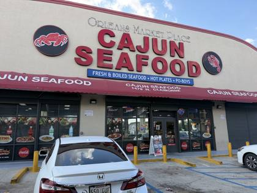
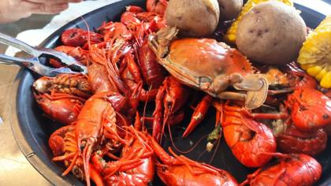
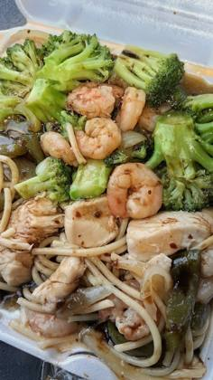
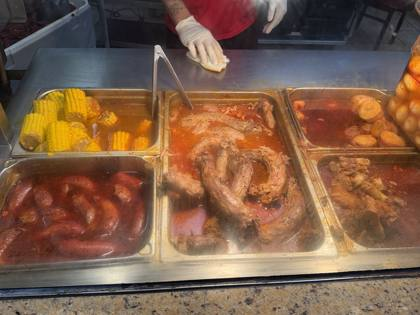
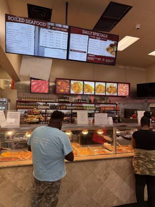

Cajun Seafood
United States · 5 photos · tap for source
🛋️ Fit-out1 photos · ← → / swipe / tap to enlarge

🦞 Food4 photos · ← → / swipe / tap to enlarge




⚑ Highlightsflagged for Seb · sourced
- Where18 sites found on Google Maps (lower bound)New Orleans LA · checked Google Maps sweep 20 Oct 2026 locations ↗
- NZ/AUUnknown
- LookWhat stands out in the photostipped onto paper (2) · buckets/pails (2) · boil-in-a-bag (2) · paper-covered tables (1) · big trays (1) · crab legs/whole crab (1) · lobster (1) Source: CLIP tags, attrs.json
- Photos1 fit-out · 4 food · 0 otherTap any photo caption for its source page.
📍 18 sites found on Google Maps (lower bound) (Google Maps sweep 20 Oct 2026)Unknown
Listing & website
📍 18 branches found on Google Maps (20 Oct 2026, lower bound)
- Cajun Seafood House Vestavia Hills, 2531 Rocky Ridge Rd Ste 107 · ★4.4 (1,163)
- Cajun Seafood Gotha, 827 Good Homes Rd · ★4.4 (797)
- Cajun Seafood Co. Gainesville, 272 Dawsonville Hwy A · ★4.8 (225)
- Cajun Seafood Express Tifton, 809 W 2nd St · ★4.5 (465)
- Cajun Seafood Wings & Fish - Marietta Fair Oaks, 2909 Austell Rd SW C118 · ★4.8 (407)
- Cajun Seafood New Orleans, 2730 S Broad Ave · ★4.3 (1,777)
- Cajun Seafood New Orleans, 1479 N Claiborne Ave · ★4.3 (6,568)
- Cajun Seafood New Orleans, 1901 Almonaster Ave · ★4.1 (264)
- Cajun Seafood Arabi, 7020 Read Blvd · ★3.9 (1,071)
- Cajun Seafood Boil Laurel, 9900 Washington Blvd N Ste f · ★4.3 (209)
- Cajun Seafood Long Island City, 48-18 Broadway · ★3.9 (14)
- Cajun Seafood Jacksonville, 1133 Gum Branch Rd · ★4.5 (1,042)
- Cajun Seafood & Grill Greensboro, 2906 Randleman Rd · ★4.1 (111)
- Cajun Seafood & Wings Orangeburg, 1337 Chestnut St · ★4.3 (534)
- Cajun Seafood Mount Juliet · ★4.7 (27)
- Cajun Seafood Norfolk · temporarily closed
- Cajun Seafood & Wings Chesapeake, 4221 Pleasant Valley Rd suite121&122 · ★4.3 (225)
- CAJUN SEAFOOD & BAR Bowie · ★5.0 (2)